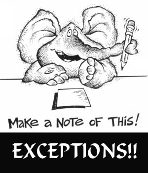

这里是 JavaScript 异常的维基百科站，用于收集、组织、分享前端开发同学遇到的 JavaScript 异常，沉淀 JavaScript 异常知识，供异常分析 & 处理参考。
搜索
常见异常
最新更新
参考
- 错误 , JavaScript 错误 JavaScript Errors
- JScript 运行时错误 , JavaScript 运行时错误 JavaScript Run-time Errors
- JScript 语法错误 , JavaScript Syntax Errors
- Handling and Avoiding Web Page Errors Part 1: The Basics
- Handling and Avoiding Web Page Errors Part 2: Run-Time Errors
- Handling and Avoiding Web Page Errors Part 3: An Ounce of Prevention
- Windows事件代码ID及错误信息